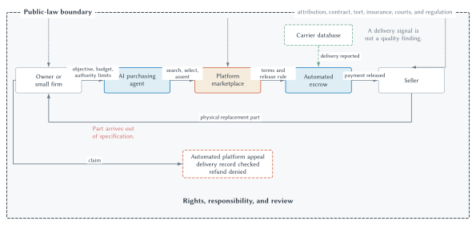

The Replacement Part
Late on a Thursday afternoon, a small manufacturer loses the control module that keeps its main cutting machine calibrated. Without a replacement, production will stop after the remaining work in progress is completed. The owner could spend the evening searching suppliers, comparing model numbers, reading delivery promises, checking return policies, and arranging payment. Instead, she gives the task to the firm’s AI purchasing agent.
Her instruction seems clear: obtain a compatible replacement for no more than $4,000, from a seller able to deliver by Monday, using the firm’s usual marketplace account. The agent searches thousands of listings, compares technical descriptions with the machine’s maintenance records, selects a highly rated seller, and accepts the marketplace’s standard terms. Payment is placed in automated escrow. The transaction appears to combine extraordinary convenience with unusually strong safeguards.
On Monday morning, a carrier records the package as delivered. That record is accurate: a box is sitting on the factory’s loading dock. The carrier’s database sends the delivery signal used by the escrow system, and payment is released to the seller.
The box contains the wrong revision of the module. Its product number differs by one character from the required part. It fits physically, but its control protocol is incompatible with the machine. The seller’s listing used the broader product-family number in its title and placed the revision limitation deep in the specifications. Whether the listing was misleading, merely ambiguous, or accurately read by the purchasing agent is disputed.
The owner requests a refund through the marketplace. An automated appeal checks the order, the seller’s shipment record, and the carrier’s delivery confirmation. It reports that the seller satisfied the verified condition and denies the claim. The owner now confronts a transaction in which nearly every step worked as designed and the overall result still failed.
Who made the contract? Did the purchasing agent remain within the authority the owner intended to grant? Which terms became part of the agreement? Did the escrow system verify satisfactory performance or only delivery? Who chose that proxy? Who can reverse the payment? Should responsibility fall on the owner, seller, platform, developer, deployer, carrier, insurer, or some combination? What happens when the cheapest process for ordinary transactions produces an expensive error?
The example is a near-future hypothetical, not a description of one company’s current product. Nothing in it requires a machine to become a legal person. It combines technologies that already have familiar ancestors: purchasing software, online marketplaces, standard-form contracts, electronic records, escrow, automated claims processing, and delegated employees. AI makes the delegation broader and less continuously supervised. Code makes execution faster and more literal. The platform joins matching, rulemaking, payment, and dispute resolution inside one private institution.
The novelty is therefore real but bounded. The transaction changes the cost of finding, agreeing, paying, verifying, and disputing. It does not eliminate the economic problems that made contract, tort, agency, insurance, courts, and regulation necessary. It rearranges them.

Figure 15.1. The Replacement Part transaction and its governance layers. An AI purchasing agent can search, select, and accept platform terms while coded escrow releases payment after a carrier reports delivery. The delivery signal establishes only what the system is designed to read; it does not establish that the replacement part satisfies every contractual requirement. Platform rules provide an initial remedy system, while public law remains available to determine attribution, rights, responsibility, and review.
The Instruction
The transaction begins before the agent visits a marketplace. It begins when the owner translates an economic objective into an instruction.
The owner wants the machine operating on Tuesday. That objective contains more than a model number and a price ceiling. Speed matters. Reliability matters. A return right matters. Compatibility with existing equipment matters. The owner might accept a more expensive part from an established supplier rather than risk another day of shutdown. She might refuse a seller outside the country because return shipping would be slow. Some of these preferences can be stated in advance. Others become apparent only when alternatives are compared.
A human purchasing employee faces the same problem. An employer rarely specifies every permissible tradeoff. The employee is expected to exercise judgment within a role, and the firm uses selection, training, supervision, spending limits, audit, and discipline to shape that judgment. An AI purchasing agent changes the technology of delegation, not the basic existence of delegation.
The important word is assigned. The agent does not originate the firm’s economic objective. People and organizations choose the system, supply information, set permissions, decide where it can transact, and determine whether a human must approve a purchase. Developers influence the system through its design and training. A deploying firm influences it through instructions, data, tools, access limits, and monitoring. The user influences it through the particular task. These actors may have different information and incentives.
Suppose the owner says, “Buy the cheapest compatible module available for Monday delivery.” The instruction may create several margins of error. Does compatible mean the same family number, the same revision, or verified operation with this machine? Does cheapest refer only to posted price or include expected delay, return costs, and shutdown risk? May the agent accept a no-return term? May it reveal the machine’s serial number to a seller? The economic objective and the machine-readable instruction are not necessarily the same thing.
The problem resembles incomplete contracting. Writing a more detailed instruction can prevent some mistakes, but specification is costly. A rule requiring human approval for every purchase reduces unauthorized commitments but sacrifices much of the speed that justified the agent. A broad instruction preserves flexibility but gives the system more room to select an unintended tradeoff. The efficient level of control is not perfect control. It balances the expected reduction in error against the cost of delay, supervision, and lost discretion.
The same balance helps explain spending permissions. A $100 autonomous limit may be sensible for office supplies and useless for industrial parts. A $100,000 limit may reduce approval delay while exposing the firm to rare but severe mistakes. Permissions can also vary by seller, product category, risk, reversibility, or confidence. The design question is marginal: where does another unit of oversight prevent more expected harm than it costs?
AI may also change the boundary of the firm, but not in one predictable direction. If an agent can search suppliers, compare contracts, monitor delivery, and switch vendors cheaply, buying from outside firms becomes easier. Lower market transaction costs can support more outsourcing. If the same technology makes internal communication, scheduling, supervision, and knowledge sharing cheaper, coordination inside a firm also becomes easier. Lower internal organization costs can support a larger firm. The observed boundary depends on which costs fall, for which activities, and by how much.
This is the Coasean question in a new setting. The choice is not “firm or AI.” Firms and markets can both use AI. The question is whether a particular transaction is organized more cheaply through internal direction, an outside contract, a platform, or some combination.
Authority Without Personhood
When a human employee orders a part, the law does not need to treat the employee as the firm. Agency law asks whether the employee had authority to affect the principal’s legal relations. Similar concepts can organize analysis when software takes the immediate action.
Actual authority concerns authority the principal gives the agent, expressly or through the circumstances. The owner may authorize purchases under $4,000 that satisfy specified constraints. A system that buys a $6,000 part may exceed that authority. A system that buys the wrong revision for $3,500 may act within its spending authority while performing the task badly. Authority and competence are different questions.
Apparent authority concerns what a principal’s manifestations reasonably communicate to a third party. If a firm gives a system credentials, places it in an approved marketplace account, and allows it to place orders repeatedly, sellers may reasonably understand that the system can commit the firm within the role presented. Secret internal limits do not necessarily communicate themselves. The precise legal result depends on governing law and facts, but the economic problem is familiar: commerce becomes costly if every counterparty must investigate every hidden internal instruction.
This creates a tradeoff. Protecting principals against every unauthorized automated action can make counterparties reluctant to rely on agents. Binding principals to every machine output can weaken incentives to design permissions and safeguards. A workable rule allocates verification duties between the principal who selected and presented the system and the counterparty who may observe warning signs.
The federal E-SIGN Act reflects one limited but important baseline: a contract or record cannot be denied legal effect solely because an electronic agent participated and no individual reviewed the particular transaction. The Uniform Electronic Transactions Act, a model law enacted in varying form across states, similarly contemplates contracts formed through electronic agents. Neither principle answers whether this agent had authority, whether assent was valid, whether a term was unconscionable, or what remedy follows from mistake. Electronic participation does not end ordinary contract analysis.
The Marketplace
The purchasing agent does not search the entire world directly. It enters a marketplace that has already organized the world into listings, rankings, seller identities, product categories, payment options, and acceptable forms of proof.
That organization creates value. A small manufacturer can find distant sellers it would never discover independently. Reviews and transaction histories can make an unfamiliar seller less risky. Standard terms reduce the cost of negotiating routine issues. Identity checks, payment processing, escrow, fraud detection, and return procedures make exchange possible among parties who do not know one another. The platform is not merely a digital bulletin board. It supplies institutional infrastructure.
The marketplace governs through at least six levers.
- Access: it decides who may open an account, list a product, purchase, or use an automated agent.
- Information: it decides what sellers must disclose, how products are categorized, and which claims require substantiation.
- Ranking: it determines which listings appear first and how price, delivery, reviews, sponsorship, and predicted fit affect recommendations.
- Reputation: it defines which transactions count toward ratings, how fraud is detected, and whether disputed reviews remain visible.
- Payment and remedies: it sets release conditions, return windows, refund procedures, and evidence requirements.
- Sanctions: it can warn, demote, suspend, delist, withhold funds, or terminate participants.
These functions resemble rulemaking, monitoring, enforcement, and adjudication. They remain contractual and private, but their economic significance can be substantial. The seller may depend on the marketplace for customers. The buyer may depend on it for trusted identity and payment. A participant formally free to leave may face the loss of reviews, transaction history, integrated software, established counterparties, and access to a large network.
Chapter 14 analyzed competition among platforms. That inquiry asks whether users have meaningful substitutes, whether network effects or switching costs protect market power, and whether conduct excludes rivals. The present inquiry asks how a platform governs transactions within its system. The two questions interact but should not be collapsed. A platform can govern well while possessing market power, govern badly while facing competition, or use governance rules to protect its competitive position.
The Platform’s Information Problem
The marketplace knows more than a court would know at the beginning of a dispute. It observes searches, listings, messages, payments, delivery records, past complaints, and account histories. It can resolve a small claim in seconds rather than months. It can also change future behavior immediately by modifying a listing, freezing funds, or suspending an account.
Yet the platform knows less than its interface may suggest. It does not inspect every replacement part. It may not understand every technical compatibility requirement. Ratings can be manipulated. Sellers can relabel products, buyers can make false claims, and automated agents can amplify small classification mistakes. The platform sees what its system records, and that record is shaped by rules chosen in advance.
Standardization is both the source of economy and a source of error. A platform handling millions of transactions needs categories. “Delivered” is easier to verify than “satisfied the buyer’s contractual purpose.” “Returned within thirty days” is easier to verify than “the defect could not reasonably have been discovered earlier.” A simple rule lowers administrative cost and makes outcomes more predictable. It also treats unlike cases alike.
The replacement-part dispute turns on this gap. The platform’s product taxonomy groups several revisions together. Its delivery system records the physical arrival of a box. Its appeal system treats that signal as strong evidence of completion. Each choice may be reasonable for most purchases. Their combination is poorly fitted to this purchase.
Private governance should therefore be compared institutionally, not idealized or dismissed. A platform may resolve disputes more cheaply than a court, possess better transactional data, and react faster to fraud. It may also write the rule, collect the fee, investigate the violation, impose the sanction, and decide the appeal. Exit, reputation, contractual safeguards, competition, insurance, public law, and procedural requirements can discipline that concentration to different degrees.
The Agreement
The purchasing agent finds a listing that appears to satisfy the instruction. It clicks the platform’s purchase control and accepts standard terms incorporated through the account. The ease of the action hides several distinct agreements.
There may be a sale contract between the firm and seller, a platform agreement between the firm and marketplace, a seller-platform agreement, payment terms governing escrow, a service agreement with the AI provider, and insurance or warranty arrangements. These documents allocate different risks. One may require arbitration. Another may limit consequential damages. A warranty may cover a defective part but not production losses. A platform guarantee may be narrower than the buyer’s rights against the seller.
The law already handles transactions in which no one reads every term. Standard forms reduce bargaining and drafting costs by supplying defaults for recurring questions. Their use also creates concerns about notice, surprise, one-sided modification, and market power. An AI agent does not remove those concerns. It may change them.
An agent can compare terms more cheaply than a human consumer. It could reject sellers with short return periods, calculate the expected cost of warranty exclusions, or prefer platforms with reliable appeals. If many agents do this, terms that humans rarely read can become dimensions of competition. A seller can no longer assume that complexity makes an unfavorable clause invisible.
But automated assent can also make standard forms more powerful. A system may optimize price and delivery while treating legal language as a fixed background. Platforms may design interfaces and machine-readable terms that favor the attributes they control. A firm may authorize rapid purchases without understanding the frequency with which the agent accepts arbitration, data-use rights, unilateral modification, or limits on recovery.
The relevant question is not whether the machine literally clicked. It is whether the legal and institutional system should attribute that action to the firm and which terms should govern. Attribution can depend on authority, notice, authentication, mistake, fraud, and mandatory law. Efficient rules make reliable exchange possible while preserving incentives to design safeguards and disclose material terms.
Mistake and Error Safeguards
Automated transactions make error safeguards especially important because the same mistake can repeat at low marginal cost. A person may mistype one order. A misconfigured agent may place ten thousand orders before the error is noticed.
The Uniform Electronic Transactions Act supplies a useful design intuition. Its treatment of some electronic-agent errors gives legal importance to whether a system offered a reasonable method to prevent or correct the mistake and whether the mistaken party promptly notified the counterparty and avoided retaining the benefit. The exact rule varies with governing law and context, but the economic structure is broader.
First, prevention and correction are substitutes at the margin. A confirmation screen, spending limit, duplicate-order check, compatibility warning, or delay before irreversible payment can reduce expected loss. Second, a party able to detect an error cheaply should have reason to act promptly. Third, a counterparty should not receive both the goods and a windfall from a known mistake. Fourth, a safeguard that interrupts every low-risk transaction may cost more than the errors it prevents.
For the replacement part, the marketplace could require the buyer to confirm the exact revision when listings combine variants. The agent provider could flag a mismatch between the maintenance record and seller specification. The owner could require approval for parts whose failure would halt production. The seller could disclose compatibility in a structured field. No single precaution is free. The liability and remedy system affects which actor finds each precaution worth taking.
Monitoring the Delegate
Delegation requires feedback. A firm cannot evaluate an agent solely by whether it completed many purchases at low prices. That measure may reward hidden quality reductions, excessive risk, or terms that shift costs into the future. The lesson is the same as in corporate governance: measurable performance can be an incomplete proxy for the principal’s objective.
Monitoring can occur before, during, or after action. Ex ante controls limit tools, counterparties, categories, or spending. Concurrent controls require approval for unusual transactions. Ex post controls audit samples, compare outcomes, investigate complaints, and update the system. Logs can improve auditability, but a long record of machine activity is not automatically an intelligible explanation.
The efficient governance system will ordinarily mix these controls. High-frequency reversible purchases may receive broad autonomy and sample audits. Rare, consequential, or difficult-to-reverse transactions may require human approval. The right rule depends less on whether the actor is called AI than on expected harm, observability, reversibility, and the comparative ability of actors to prevent error.
The Automatic Payment
The firm and seller do not rely entirely on a promise to pay later. The buyer’s funds enter escrow, and the system is instructed to release them when the carrier reports delivery. Automation makes the seller more confident that payment will arrive and makes the buyer more confident that funds will not be released before shipment reaches the stated destination.
The name can mislead in two directions. A coded transaction need not use a blockchain. A bank, marketplace, insurer, employer, or ordinary server can execute a rule automatically. Conversely, code can perform one part of a legally significant arrangement without containing the entire contract. The sale may include promises about compatibility, title, delivery, warranties, return rights, and remedies even if code automates only payment.
Automation can serve as a commitment device. Once the condition occurs, a party may be unable to delay, renegotiate, or opportunistically refuse performance. This can reduce enforcement and collection costs. A seller dealing with an unknown buyer may accept a lower price if escrow makes payment reliable. The buyer may transact with an unknown seller if the release rule protects funds until a specified event.
Rigidity is part of the commitment. If either party can casually stop execution, the promise is weaker. If neither party can stop it, mistakes and unforeseen events become harder to correct. The economically useful degree of reversibility depends on the threat being controlled. A short delay, multi-party approval, emergency stop, insurance fund, or later legal remedy can preserve much of the commitment while limiting catastrophic error.
Verification Is Not Trust
Automated systems are sometimes described as replacing trust with verification. That statement is only partly correct. The system can verify that a specified digital condition appears in its data. Participants still rely on the source of that data, the code that processes it, the governance system that can change it, and the institutions that respond when the recorded condition differs from the legally relevant event.
In the hypothetical, the carrier database acts as an oracle. It reports that the package was delivered. The report is true. The difficulty is not false data but incomplete data. Delivery is one fact about performance. It does not establish that the package contains the promised item, that the item is functional, that it matches the required revision, or that a delay is excused.
This is a central lesson. Better data integrity cannot solve a poorly specified question. A tamper-resistant record proving that a box reached the loading dock still does not prove conformity with the contract. The system must decide which observable signal will trigger which action. That design embeds a judgment about what ordinarily matters and who bears the risk when the proxy fails.
Other transactions reveal the same structure. Automated crop insurance may use recorded rainfall even though conditions vary across a farm. A royalty system may count streams without deciding whether accounts are fraudulent. A shipping contract may respond to a port closure without determining whether a party could have used another route. A medical-payment system may verify that a procedure code was entered without deciding whether treatment was necessary.
Oracles can be improved through multiple data sources, inspections, sensors, attestations, randomized audits, reputation, bonds, or human review. Each adds cost and creates another possible point of failure or influence. The efficient system does not verify everything. It selects verification intensity according to expected stakes, manipulability, and the cost of correction.
Incomplete Contracts in Code
The urge to put the whole agreement into code confronts the same problem as complete written contracts: the future contains too many possible states. Parties may not foresee a new kind of defect, supply interruption, regulatory order, cyberattack, illness, or change in purpose. Even when they foresee an event, they may be unable to describe it in a form a machine can observe cheaply.
Legal language often uses standards such as reasonable effort, good faith, material breach, substantial performance, and commercial reasonableness. These terms are less mechanically predictable than a timestamp. They are also adaptable. They allow context to matter when writing an exhaustive list would be impossible or wasteful.
Code excels when the relevant condition is clear, observable, and appropriately tied to the desired action. It is less complete when meaning depends on purpose, credibility, custom, fault, excuse, or proportionality. A legal system can interpret, reform, excuse, enjoin, or award damages after a coded action occurs. The code may be practically difficult to reverse while its legal consequences remain contestable.
Smart legal contracts therefore combine code with legal text, institutional roles, and remedial rules. A carefully designed agreement might state what the code will do, what source supplies data, who bears a data error, how a party pauses execution, which terms control if code and prose conflict, and what remedy follows from unintended performance. Automation becomes one component of contracting rather than a replacement for contract law.
The Failure
The part arrives. The machine remains idle. Payment has left escrow. The appeal system says delivery was confirmed. The failure is economically useful precisely because no single component must be fraudulent or broken.
The owner’s instruction may have been too loose. The purchasing agent may have over-weighted price and delivery. The seller’s listing may have combined incompatible revisions. The platform’s categories may have hidden the difference. The escrow rule may have used an incomplete trigger. The appeal system may have treated the same trigger as conclusive. The owner may have skipped a readily available approval setting. Several actors could have prevented the loss, and responsibility need not be all or nothing.
Law and economics asks how alternative rules affect behavior before the next transaction. Assigning the current loss also creates incentives for precaution, information disclosure, insurance, monitoring, product design, and activity level.
Who Could Avoid the Loss?
The owner knows the cost of downtime and the importance of exact compatibility. She can set a narrower instruction, require approval, limit sellers, or insure business interruption. But she may not know how the agent interprets technical descriptions or how the platform structures variants.
The seller knows what part it possesses and may know that the product family contains incompatible revisions. It can photograph the label, use a structured specification, or contact the buyer when a machine serial number suggests uncertainty. But the seller may reasonably rely on an order containing an exact listed number.
The AI developer or provider can test error patterns, build confirmation rules, preserve logs, issue updates, and make uncertainty visible. It can spread the cost of a general safeguard across many users. Yet it may lack transaction-specific knowledge, and overbroad warnings can make the system unusable.
The deploying firm can configure tools, permissions, data access, approval thresholds, and monitoring. In some settings the developer and deployer are the same organization; in others they are not. Separating them matters because control and information may be divided.
The platform controls listing fields, identity, ranking, payment, appeals, and transaction records. It can require revision-level identifiers or create a specialized process for high-value technical goods. It may be best positioned to detect repeated complaints across sellers and buyers. It also faces incentives to keep transactions fast and appeal costs low.
The carrier can accurately report delivery but ordinarily cannot inspect contractual quality. Making the carrier liable for incompatible contents would place the loss on an actor poorly positioned to avoid it, unless the carrier separately undertook inspection.
An insurer can pool residual risk and price coverage. Insurance does not prevent every error, but underwriting, deductibles, exclusions, audits, and claims data can influence precaution. Coverage can also solve a compensation problem when a responsible actor is insolvent or difficult to identify.
The least-cost avoider is not always one actor for every margin. The seller may cheaply disclose the revision. The platform may cheaply require a field. The owner may cheaply require approval for critical parts. The developer may cheaply block a known mismatch. A legal rule can divide duties when precautions are complementary.
Precaution, Scale, and Activity Level
Automation changes not only the chance of error per transaction but the number and speed of transactions. Suppose an agent’s error rate is one-tenth of a human buyer’s. If the system conducts one thousand times as many transactions, aggregate errors can still increase. Cheap action can expand activity.
This is the activity-level problem from tort law. A system can take reasonable precaution on each transaction and still create excessive expected harm by operating too widely, too quickly, or in settings where mistakes are difficult to reverse. A rule focused only on a technical safety standard may not give the actor reason to reconsider whether the activity belongs in a high-risk domain at all.
Strict liability can place accident costs on the actor controlling activity level, but only if causation and responsibility can be identified and liability is collectible. Negligence can encourage specified precautions while leaving some activity-level decisions outside the legal standard. Regulation can restrict high-risk uses or require ex ante testing, but regulators face information, delay, and public-choice problems. Insurance can price some risks but may struggle with correlated failures and rapidly changing systems.
The proper institutional bundle depends on the harm. A mistaken $40 supply order may be handled through refunds and account controls. An automated system that can move industrial equipment, approve medical treatment, trade with borrowed funds, or affect third parties may justify stronger permissions, monitoring, insurance, or public oversight. The word AI does not supply the threshold. Expected harm, reversibility, observability, and who bears the consequences do.
Contract Harm and Third-Party Harm
The replacement-part dispute principally concerns parties connected by agreements. Contract can allocate quality, warranties, payment, limitation of liability, and dispute procedures. Contracting parties can price some risks and choose counterparties.
Automated systems can also harm people who never agreed to the system’s terms. A purchasing agent might order a hazardous substance shipped improperly. A delivery system might injure a pedestrian. An automated pricing or access rule might affect market participants outside a particular contract. Tort and regulation become more important when victims cannot bargain in advance, identify the responsible system, or monitor its operation.
The distinction matters because platform terms cannot automatically settle every external claim. A buyer and platform may allocate losses between themselves, but their contract does not by itself eliminate a third party’s rights. Private governance operates inside a public legal order that defines which arrangements receive enforcement and which duties cannot be contracted away.
The Private Appeal
The owner opens the marketplace’s dispute interface. The system requests a reason code, photographs, the listing, delivery information, and a short explanation. It compares those materials with the transaction record. Because the package was delivered and the listing included the product-family number, the automated appeal denies a refund.
The platform can process the claim at a fraction of the cost of ordinary litigation. The disputed amount is too small to justify extensive discovery or expert testimony. The system possesses the listing and payment record already. A fast refund can preserve trust and keep trade moving. Private dispute resolution is one of the marketplace’s products.
Its design affects behavior. If buyers always receive refunds, opportunistic claims rise and sellers increase prices or leave. If delivery confirmation always defeats a claim, sellers have weaker incentives to describe quality accurately. If the platform bears refund costs, it may invest in prevention but also deny meritorious claims. If sellers bear every claim, the platform may advertise generous protection without internalizing the full cost.
The platform can use more than money. It can correct a listing, reduce ranking, require additional verification, hold reserves, suspend an agent, delist a seller, or warn similar buyers. Because it observes repeated transactions, it may detect patterns that one court case would miss. Reputation and access sanctions can be more effective than damages against a seller with few reachable assets.
Procedure as an Economic Design Problem
An appeal system must decide how much procedure to buy. Notice tells a participant what rule or fact matters. Explanation allows a party to identify a mistaken input or interpretation. An opportunity to respond supplies information held by the affected party. Human review can address unusual cases. Independence can reduce the risk that the initial decision simply validates itself. Each safeguard costs time and money.
A useful system may sort disputes. Routine low-value claims can receive automated resolution with a simple path to correction. Cases involving inconsistent data, repeated allegations, high stakes, account termination, or difficult interpretation can receive human review. Random audits can test whether automated decisions systematically miss a category of harm. An emergency process can pause an irreversible action.
The National Institute of Standards and Technology’s AI risk framework organizes governance around functions such as mapping risk, measuring it, managing it, and governing the process. At a principles level, the important elements are familiar: identify responsible roles, monitor performance after deployment, permit appeal or override, document change, and deactivate a system when necessary. These are organizational controls, not proof that every decision was correct.
The owner in the hypothetical needs more than a longer automated explanation that says “delivery confirmed.” She needs a review path capable of recognizing that delivery and conformity are different facts. That may require a human with authority to examine the specification, a specialized seller warranty process, independent inspection, or a temporary reversal of payment.
Private appeal and public adjudication are not perfect substitutes. Platform procedure is cheap, fast, and integrated with the transaction. A court offers public authority, broader remedies, procedural protections, and an institution not controlled by the marketplace, but at much higher cost and delay. Arbitration, ombuds services, insurance adjustment, chargeback, administrative review, and small-claims court occupy intermediate positions. Good governance can combine them.
Exit and Voice
A platform may defend its appeal process by observing that dissatisfied users can leave. Exit is important, but its strength is empirical. A manufacturer with transaction history, integrated purchasing software, supplier relationships, and established reputation may incur substantial switching costs. A seller may need access to the platform’s buyer network. Multi-homing across marketplaces can strengthen exit; exclusive rules or data incompatibility can weaken it.
Voice can supplement exit. Participants may appeal, supply feedback, vote through associations, negotiate enterprise terms, or seek public rules. Transparency can help users compare systems, but disclosure alone may be ineffective if terms are complex or alternatives are weak. Competition, contractual governance, collective action, and legal oversight are complementary constraints on private power.
The chapter’s claim is not that platforms should copy courts. A marketplace handling routine transactions would destroy much of its value if every dispute received a trial. The claim is that procedure should match error costs, stakes, and information. Automation lowers the cost of an initial decision. It does not make review worthless.
The Legal Aftermath
After the platform denies the claim, public law becomes more visible. It was present all along.
Law helped determine whether the seller owned the part, whether electronic records and signatures could form an agreement, whether the firm could delegate purchasing authority, whether standard terms were enforceable, whether escrow could hold and transfer funds, whether warranties could be limited, whether a platform could suspend an account, and whether an injured party could seek a remedy. Most successful transactions never reach a court, but they occur in the shadow of legal entitlements and backstops.
This is the same relationship seen throughout the book. Property rights support exchange. Contract law supports commitment. Tort law addresses accidental and third-party harm. Corporate law organizes delegated activity and asset pools. Courts supply authoritative dispute resolution. Regulation sets ex ante conditions when private ordering and ex post liability are inadequate. Antitrust protects the competitive process that makes exit and entry meaningful. Technology changes how these institutions operate; it does not begin outside them.
Attributing the Transaction
The first legal question is attribution. Was the purchase an act of the firm? Relevant facts include the authority granted, credentials supplied, marketplace presentation, prior practice, seller knowledge, warning signs, and any safeguard that failed. Treating the AI agent as a separate legal person would not make those facts disappear. It might instead create an undercapitalized entity between the injured party and the people or organizations that selected, designed, benefited from, and controlled the system.
Existing principles can handle many cases by asking whose agent or instrument the system was, what authority was communicated, and which actor had a duty to monitor. New rules may be useful where scale, opacity, or divided control makes those principles difficult to apply. The need for adaptation should be shown through a specific failure, not assumed from the label AI.
The law must also preserve reasonable reliance. If a firm knowingly releases an automated buyer into commerce with credentials and broad permissions, it may be efficient to place some unauthorized-transaction risk on the firm. The firm can change permissions and spread costs across its transactions. If a seller exploits an obvious malfunction, concealment or opportunism changes the analysis. Rules should not reward parties for ignoring cheap evidence that the transaction is mistaken.
Allocating Responsibility
Responsibility can be allocated through contract, tort, product liability, agency, insurance, regulation, and platform rules. No universal formula identifies the correct defendant. A disciplined economic analysis asks several questions.
- Control: who could change the relevant behavior, model, data source, permission, listing, payment rule, or appeal?
- Information: who could identify the risk before or after deployment, and at what cost?
- Least-cost avoidance: which precaution could prevent the harm most cheaply?
- Loss spreading and insurance: who can pool the residual risk, and will coverage preserve incentives through premiums, deductibles, limits, or audit?
- Activity level: who decides how widely and rapidly the system operates?
- Causation and proof: can an injured party trace the failure, or does one actor control the relevant logs and evidence?
- Innovation and entry: would liability induce useful safety investment, or create an uninsurable burden that protects incumbents without improving care?
These questions can point to more than one actor. The seller may owe a remedy for nonconforming goods. The owner may bear production losses excluded by a valid limitation. The platform may promise a narrower guarantee. The agent provider may be responsible if a known compatibility bug caused the purchase. An insurer may compensate first and pursue recovery later. A court may interpret the agreement even though payment already executed.
The allocation should follow the failure mechanism. Calling every participant part of an “AI supply chain” is not enough. Liability directed at an actor with no relevant control can raise price without improving precaution. Immunity for an actor controlling a system-wide risk can produce underinvestment in safety. The task is to connect a rule to a margin.
Ex Ante Rules, Ex Post Liability, and Insurance
Ex ante oversight acts before harm. It can require testing, documentation, security, capital, human approval, restricted uses, data controls, or licensing. It is attractive when harm could be catastrophic, difficult to reverse, widely dispersed, or hard to prove after the fact. It can also freeze an early design, favor large incumbents able to bear compliance costs, and rely on regulators with incomplete information.
Ex post liability preserves flexibility. Actors can choose precautions and pay when their choices cause legally recognized harm. This can use decentralized information and adapt across technologies. It performs poorly when causation is opaque, victims cannot sue, defendants are judgment-proof, harms are diffuse, or litigation is too slow to affect design.
Insurance can compensate and monitor. Insurers may develop claims data across firms, price risk, require controls, and spread losses. They may also exclude uncertain risks, misprice correlated failures, or become dependent on the same models and data as insured firms. Mandatory insurance can ensure a compensation pool but may block small entrants if coverage is scarce.
Mixed systems are normal. A platform can require seller verification and maintain reserves; a firm can impose approval limits; an insurer can audit controls; tort and contract can allocate losses; courts can review disputes; regulators can prohibit a narrow high-risk use. The right comparison is among feasible bundles, not between “innovation” and “regulation.”
Public Law and Private Runtimes
The automated transaction operates through a runtime: a system that receives instructions, reads inputs, applies rules, and produces actions. The platform’s runtime includes software, terms, databases, human administrators, appeal procedures, and access sanctions. Public law supplies a larger runtime of rights, attribution rules, remedies, institutions, and limits.
The two systems interact. Public law can recognize electronic contracting, enforce platform terms, refuse an unlawful term, compel evidence, assign liability, or require review. Platform governance can prevent a dispute from ever reaching public institutions. Code can perform a remedy before a judge could schedule a hearing. A court can later determine that the automated performance did not discharge a legal obligation.
This complementarity corrects two opposite errors. The first is technological romanticism: the belief that sufficiently good code makes legal interpretation, authority, and enforcement unnecessary. The second is legal romanticism: the belief that public courts can supply all needed governance without the cheaper rules, reputation, monitoring, and dispute systems created by private organizations.
Institutions specialize. Code is strong at repeated execution of specified rules. Platforms are strong at organizing transactions and using system-wide data. Firms are strong at purposeful adaptation under delegated authority. Insurers are strong at pooling and pricing some risks. Courts are strong at authoritative interpretation and remedies. Regulators can set general ex ante constraints and investigate system-wide harms. Each institution also has characteristic failures.
A Brief Return to Competition
If many firms use the same platform, data source, or automated decision service, governance within one system can affect competition outside it. A platform’s ranking rule may favor its own product. A common pricing tool may facilitate coordination. A purchasing agent may steer buyers toward sellers that pay for access. A technical standard may make switching difficult.
These possibilities return us briefly to Chapter 14, but technology does not eliminate the need to specify an antitrust mechanism. Similar prices can reflect common data and independent optimization or an agreement to coordinate. A large platform can result from network value or exclusion. Algorithmic action is evidence to investigate, not a substitute for identifying market power, agreement, harm, efficiency, and remedy.
The deeper connection is institutional. A platform can simultaneously reduce transaction costs for participants and become a bottleneck governing their access. Antitrust may protect competition among systems. Contract, procedure, regulation, and private ordering govern conduct within a system. Neither inquiry should silently absorb the other.
What the Replacement Part Teaches
Return to Figure 15.1. The owner delegates authority. The AI agent lowers search and comparison costs. The platform lowers matching, trust, bargaining, payment, and dispute costs. Escrow makes a promise more credible. The carrier supplies a machine-readable signal. The seller receives reliable payment. Private appeal offers a cheap initial remedy. Public law supplies attribution, responsibility, and authoritative review.
Every layer adds value. Every layer also leaves something unresolved.
The owner’s instruction cannot state every tradeoff. The agent can act without perfectly sharing the owner’s objective. The platform’s categories and rules simplify transactions while allocating power. The agreement contains legal obligations beyond the code. The carrier can establish delivery without establishing quality. Escrow can execute a condition without interpreting material performance. The appeal system can be fast while relying on the same incomplete proxy. A court can correct some errors but at a cost that exceeds many claims.
The efficient system is therefore not the one with the most automation or the most law. It is the one that places each decision with an institution comparatively able to make it, supplies incentives to prevent and insure against error, and preserves a proportionate path to correction.
This conclusion is less futuristic than it first appears. Law and economics has always studied technologies of coordination. Property defines control. Contract supports promises. Tort assigns accident costs. The corporation organizes delegated action. Courts and regulators create procedures for decision and review. Platforms, code, and AI are new instruments inside the same enduring problem.
The problem is not how to choose between human judgment and machines in the abstract. It is how to combine people, organizations, markets, code, and public institutions under scarcity, limited information, conflicting incentives, and error.
The Big Picture
Platforms, automated execution, and AI agents should be analyzed as interacting institutional layers. A platform is both an intermediary and a private governor. It lowers search and trust costs by defining access, information, ranking, reputation, payment, remedies, and sanctions. Those same functions can create dependency and concentrated private power, especially when network effects and switching costs weaken exit.
An AI agent is a delegated economic actor, not automatically a legal person. Its use raises familiar questions of objective setting, authority, monitoring, apparent authority, error safeguards, and organizational responsibility. AI can lower the cost of outside contracting and the cost of internal coordination, so its effect on firm boundaries is not predetermined.
Automated execution can make commitments faster and more credible. A smart contract can perform a specified action when a machine-readable condition occurs. It does not necessarily contain the entire agreement or use a blockchain. The oracle problem appears whenever code relies on information from outside its system. Accurate data may still answer the wrong legal or economic question.
The distinction between execution and interpretation is central. Code can release payment after delivery is reported. It cannot infer from that fact alone that the goods conform, that an exception applies, or that a party possessed authority. Legal standards, amendment, excuse, review, and remedies remain useful because contracts and instructions are incomplete.
Failures should be traced to actors and margins. Users, developers, deployers, platforms, sellers, data providers, and insurers possess different control and information. Responsibility should consider least-cost avoidance, monitoring, insurance, activity level, causation, evidence, and effects on innovation and entry.
Private appeal can resolve ordinary disputes cheaply and use information already inside a platform. It can also combine rulemaking, enforcement, and review. Notice, explanation, correction, escalation, audit, and meaningful exit help discipline private procedure. Public adjudication remains a backstop with broader authority but greater cost and delay.
The institutions are complements. Ex ante rules, ex post liability, insurance, platform governance, code, and courts each handle different problems. Technology lowers some transaction costs and relocates others. The central question is always comparative: which institution should make, execute, review, and revise which decision?
Chapter Study Map
- Core ideas: technology as a change in transaction costs, delegated authority, actual and apparent authority, AI agents, firm boundaries, platform intermediation, private governance, access, ranking, reputation, standard terms, automated assent, error safeguards, smart contracts, automated execution, commitment, verification, the oracle problem, incomplete contracts, code rigidity, least-cost avoidance, activity level, private appeal, exit and voice, attribution, insurance, ex ante oversight, ex post liability, institutional competence, and mixed governance.
- Continuous case: use the Replacement Part transaction to separate the owner’s objective, the agent’s instruction, platform rules, seller performance, carrier data, coded payment, private appeal, and public-law review.
- Figure: use Figure 15.1 to follow delegated authority, search and assent, automated payment, physical delivery, the inaccurate inference from an accurate signal, private appeal, and public-law backstops.
- Legal baselines: electronic contracting can have legal effect even without contemporaneous human review; ordinary questions of authority, assent, mistake, enforceability, and remedy remain. UETA is a model law enacted in varying form across states rather than one identical national code.
- Reasoning tasks: identify the cost lowered by each layer, distinguish delivery from contractual conformity, connect a failure to a responsible margin, compare prevention with correction, test whether exit is meaningful, and choose among private rules, code, insurance, liability, courts, and regulation.
- Common mistakes: treating AI as a legal person by default, assuming a user’s objective is identical to a system instruction, treating platforms as neutral bulletin boards, equating data integrity with factual or legal completeness, defining smart contracts as blockchains, assuming code interprets the agreement it executes, assigning all responsibility to the nearest actor, and selecting one governance instrument in isolation.
- Optional enrichment: technical blockchain consensus, decentralized autonomous organizations, detailed jurisdictional agency doctrine, current platform statutes, sector-specific AI regulation, and prediction-heavy claims about future capabilities.
Review Questions
- What makes the Replacement Part transaction a useful law-and-economics problem even if every system component operates as designed?
- What does it mean to say that technology moves transaction costs?
- Define an AI agent at the principles level.
- Why does an AI agent’s economic autonomy not establish legal personhood?
- Why can the owner’s economic objective differ from the instruction given to the agent?
- What is the marginal tradeoff involved in requiring human approval?
- How can AI lower market transaction costs?
- How can AI lower internal organization costs?
- Why is there no predetermined effect of AI on firm size or boundaries?
- Distinguish actual authority from apparent authority.
- Why can secret internal limits create a reliance problem for counterparties?
- What limited baseline do E-SIGN and UETA provide for electronic-agent transactions?
- What legal questions remain after electronic participation is recognized?
- Define private governance.
- Identify six ways the marketplace governs participants.
- Distinguish governance within a platform from competition among platforms.
- Why can standardization both reduce cost and create error?
- Why may a formal right to exit provide weak discipline?
- How might an AI agent make standard contract terms more competitive?
- How might automated assent strengthen the effects of standard terms?
- Why are error safeguards especially important for automated transactions?
- Distinguish ex ante, concurrent, and ex post monitoring.
- Define a smart contract.
- Why is blockchain neither necessary nor sufficient to define automated contracting?
- How can automated execution operate as a commitment device?
- Define the oracle problem.
- Why is the accurate carrier report insufficient to establish satisfactory performance?
- Why can better data integrity fail to solve an oracle problem?
- How do legal standards respond to incomplete contracts differently from rigid code?
- Explain the warning that execution is not interpretation.
- Identify the preventive margin controlled by the owner, seller, developer, deployer, platform, and insurer.
- How can automation reduce error per transaction while increasing aggregate harm?
- Why does activity level matter for automated systems?
- Why can platform dispute resolution be superior to court for ordinary claims?
- What incentive problem arises if buyers always receive refunds? If delivery confirmation always defeats a claim?
- What procedural functions do notice, explanation, response, escalation, and audit serve?
- Why are platform appeal and public adjudication complements rather than perfect substitutes?
- What facts determine whether exit from a platform is meaningful?
- What seven questions can guide allocation of responsibility for an automated-system failure?
- When is ex ante oversight more attractive than ex post liability?
- What governance functions can insurance perform besides compensation?
- Why is a mixed governance system usually more realistic than a choice between innovation and regulation?
- In what sense was public law present before the Replacement Part dispute reached a court?
- Why does algorithmic action not eliminate the need to identify an antitrust mechanism?
- State the chapter’s central institutional-choice question.
Economic Reasoning Questions
- The owner tells the purchasing agent to buy the “cheapest compatible part.” Identify four dimensions hidden inside that instruction. Design a more precise instruction, then explain what flexibility your design sacrifices.
- Compare a $100 autonomous spending limit with a $100,000 limit. Explain how transaction value, reversibility, frequency, seller reputation, and potential third-party harm should affect the threshold.
- A firm uses AI to search outside suppliers and to coordinate its own employees. Construct one path by which the firm becomes smaller and one by which it becomes larger. State the transaction-cost comparison in each.
- A purchasing agent exceeds a secret $5,000 limit and places a $5,500 order through credentials the firm publicly presents as authorized. Analyze actual authority, apparent authority, counterparty verification, and the firm’s control over risk. Do not assume a legal result without a jurisdiction.
- A platform introduces a machine-readable warranty score. Explain how the score could make contract terms more competitive. Then explain how the platform’s control of the scoring method could distort competition or hide important differences.
- A seller lists one product-family number covering five incompatible revisions. Identify precautions available to the seller, buyer, agent provider, and platform. Which precaution appears cheapest, and what additional fact could reverse your answer?
- An escrow rule releases payment when three independent sensors report that refrigerated goods stayed below a threshold. Explain what this verifies. Identify two legally relevant facts it does not verify and two new governance problems created by using three data sources.
- A smart contract is made fully irreversible to prevent opportunistic cancellation. Construct the strongest argument for irreversibility and the strongest argument for an emergency stop. Design a compromise and identify who controls it.
- An automated buyer has one-tenth the error rate of human buyers but executes one hundred times as many transactions. Calculate the change in expected number of errors, holding everything else constant. Explain why severity and correlation also matter.
- A platform pays refunds itself. Compare its incentive to prevent bad listings with a system in which sellers fund every refund and a system in which buyers bear every loss after delivery. Include fraud and participation effects.
- Design a three-level appeal process for transactions worth $50, $5,000, and $500,000. Explain how procedure should change with stakes, factual complexity, irreversibility, and precedent effects.
- A platform gives a detailed explanation for every automated denial but no opportunity for correction or human review. Explain why explanation can reduce error costs and why it may still be insufficient.
- Allocate a loss among owner, seller, AI provider, platform, and insurer under three alternative facts: a misleading listing, a known software bug, and an ignored owner approval setting. Tie each allocation to future incentives rather than fairness labels alone.
- A proposed law makes AI developers strictly liable for every loss involving their systems. Construct the strongest precaution and compensation argument for the rule. Then identify control, causation, insurance, entry, and activity-level problems. Propose a narrower alternative.
- Competing sellers use the same automated pricing service and prices move together. Construct an independent-response explanation and a coordination explanation. Identify evidence needed before reaching an antitrust conclusion.
- A dominant marketplace offers excellent dispute resolution but prevents sellers from carrying their transaction histories to rivals. Separate the private-governance benefits from the competition concern. Compare portability, multi-homing, antitrust enforcement, and doing nothing.
- The seller’s contract limits recovery to the purchase price, while the owner’s factory loses $80,000 from downtime. Explain how foreseeability, pricing, insurance, information, and moral hazard enter an economic analysis of the limitation. Do not resolve the doctrine without governing law.
- Compare four institutions for the replacement-part claim: automated platform appeal, human platform review, arbitration, and court. For each, identify information, cost, speed, independence, remedy, error correction, and ability to influence future transactions.
- A regulator proposes requiring human approval for every AI-initiated contract. Identify the harms the rule could prevent, the transactions it would burden, and a risk-based alternative. Explain how a regulator would update the threshold as technology changes.
- Map one ordinary online purchase you have made into Figure 15.1. Identify which layers were visible to you, which were hidden, and which public-law backstops mattered even though no dispute occurred.
Law and Economics Lab
The Technology-Governance Audit
Select or construct a transaction involving a platform, automated execution, and an AI-assisted decision. The transaction may concern purchasing, work, transportation, housing, finance, insurance, creative licensing, health administration, or another setting. Keep the factual scenario stable throughout the audit.
- Map the system. Identify every person, firm, platform, software system, data source, insurer, and public institution. Draw the direction of authority, information, payment, performance, and review.
- State the economic objective. Explain what the principal wants. Then state the actual instruction or metric supplied to the automated system. Identify at least two ways the instruction could diverge from the objective.
- Define authority. Identify who selected and deployed the system, what permissions it received, how it appeared to counterparties, and which actions require human approval. Separate actual authority from reasonable third-party reliance.
- Inventory the agreements. Identify the promises, standard terms, warranties, platform guarantees, payment rules, liability limits, dispute procedures, and insurance. Distinguish the agreement from the action performed by code.
- Locate private governance. Record rules for access, information, ranking, reputation, payment, appeals, and sanctions. Explain who writes and changes each rule.
- Identify costs reduced. For every technology layer, state which search, bargaining, trust, monitoring, execution, enforcement, or dispute cost it lowers. Do not count speed as a benefit without identifying whose time or resources are saved.
- Trace required information. Identify every external fact the system must know. State the source, what the signal actually proves, how it can be mistaken or manipulated, and which legally relevant facts remain unobserved.
- Create one failure. Change one fact, input, instruction, or event. Follow the failure through the entire system. Explain whether the problem is fraud, mistake, incomplete specification, unauthorized action, code error, poor proxy, conflicting interpretation, or some combination.
- Allocate prevention. For each actor, identify a feasible precaution and its cost. Apply control, information, least-cost avoidance, scale, insurance, and activity-level reasoning. Explain why one actor should not bear responsibility for a margin it cannot affect.
- Design correction. Build a process for notice, explanation, response, temporary pause, escalation, human review, audit, remedy, and system update. Scale the procedure to the stakes and frequency of the transaction.
- Compare institutional bundles. Evaluate at least three combinations of platform governance, contract, tort, insurance, public adjudication, and ex ante regulation. Include information needs, delay, enforcement, error costs, innovation, entry, and public-choice limits.
- Test exit and power. Identify substitutes for the platform or system, switching costs, network effects, data portability, multi-homing, and dependency. Distinguish governance within the system from competition among systems.
- Use AI as an adversarial analyst. Give an AI system your frozen scenario and ask it to identify missing actors, hidden assumptions, alternative failure mechanisms, and governance designs. Require it to mark every claim about current law, technology, or platform practice that needs verification.
- Audit the AI. Check every current factual and legal claim against authoritative sources. Record invented doctrine, unsupported capability claims, assumed legal personhood, confused actors, missing third parties, and proposals that merely say “add human oversight” without specifying when or how.
- Reach a comparative conclusion. Recommend a governance bundle. State which cost each component reduces, which failure remains, who bears the residual risk, and what new evidence would change your recommendation.
The final submission should include the transaction map, a concise evidence appendix, and a one-page institutional comparison. The purpose is not to decide whether technology is good or bad. It is to identify how technology redistributes decision rights and transaction costs, then design correction and responsibility around the actual failure mechanism.